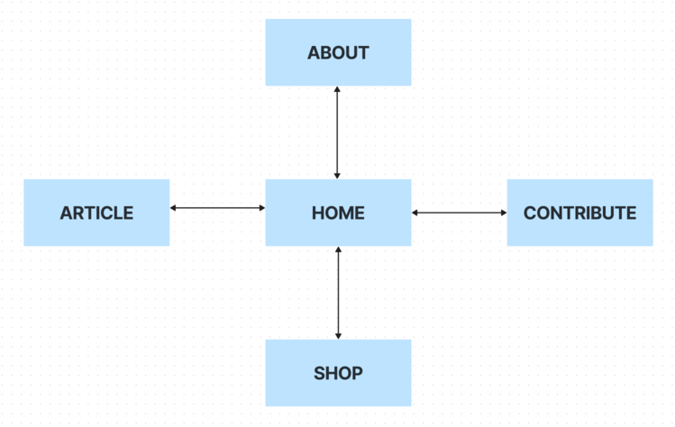

What is the essential story being told by your site and what type of structure did you choose to implement?
I have an interest in finance and business and I am a huge fan of the TV show Gilmore Girls. I decided to design a website based on these two interests. In Gilmore Girls, the Stars Hollow Gazette is a local newspaper in the Stars Hollow town . The paper has a print edition but has no online presence. I decided to create a financial news website for a fictional finance club in Stars Hollow that caters to people interested in international finance and business.
The essential story being told by the website is to present finance and business news that is updated daily. This is in contrast to a print magazine that might only be printed once a week or less regularly and isn't suitable for this kind of information. The news articles consist of stories written by the editorial team as well as those pulled from an api that enriches and widens the scope of information that can be presented to readers. Each article on the home page can be opened in a separate page to be read in full. Readers can also contribute their own stories through a form on the Contribute page. The website also includes an online store element whereby readers can buy special editions of magazines or other material that the team might think would be beneficial.
I chose to implement a webbed model for the website, which has a net-like structure. The homepage is connected to the other pages through internal links which are shown on the navigation bar and the footer. The navigation bar and footer are present on all pages. The other pages in my website are the About, Contribute, Shop and an article page that opens when an individual article in the home page is clicked on. Since each page is available at all times, visitors can access all other pages from the page they are currently on. This structure is duplicated on the footer which can also be used to move to any other page on the website. The structure looks as follows:
